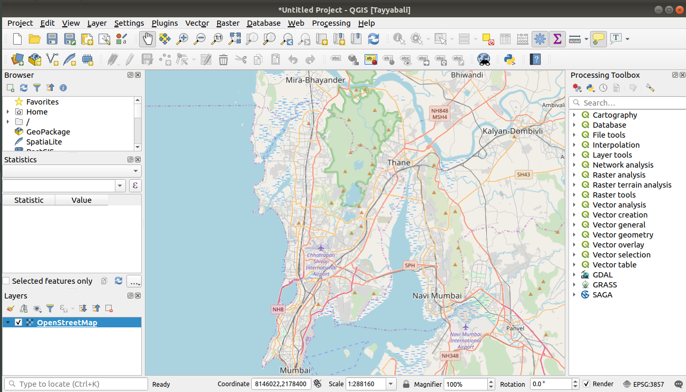
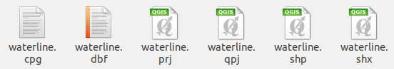
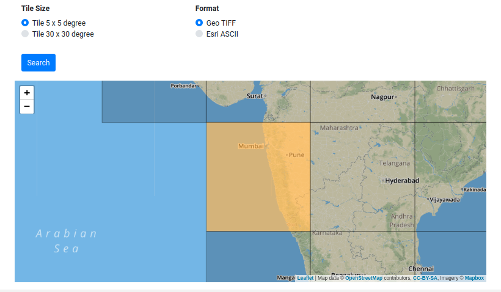
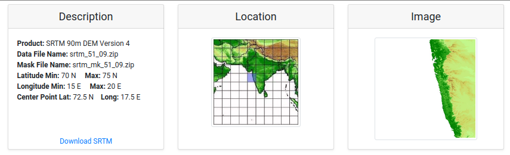
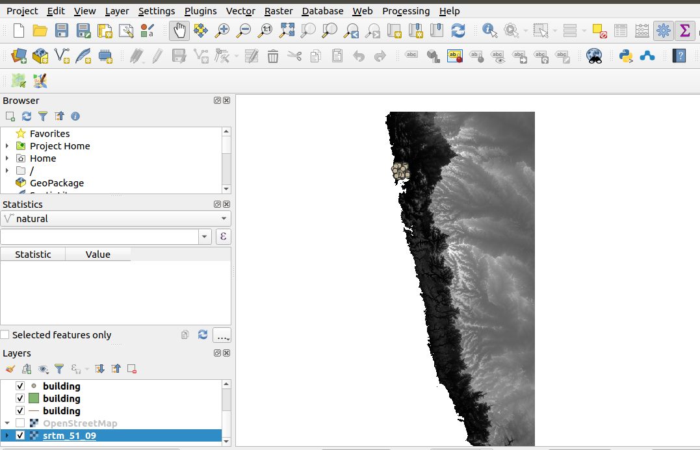

Create Vector/Raster Data using OSM and QGIS
Learn to create our own data using Open Street Map
Activity 1 : Stpes to Download OSM data
- Start QGIS
- Create a new Project and save as DataImportActivity in Home / QGIS Projects Directory
- Select
Layer>>Data Source Manager - Select
Browsertab and UnderXYZ TilesDubble clickOpenStreetMapand then close the Window - Move to the India and Mumbai area on the Map as shown below

Now we have the area which we want to study, next step would be to download the data
[Optional] Steps to configure proxy server
If you are connected to internet using the proxy then you need to set the proxy in the QGIS as shown below
- Go to the Settings
- Select Options..
- Select Network tab
- And check
Use proxy for web access - Based on the proxy server setting you can configure parameters, you can also set the systems proxy as default for QGIS proxy
Install QuickOSM Plugin for OSM data download
Steps
- Go to the Plugins, Manage/Install Plugins
- In all Tab search for
QuickOSMand install - Close the Window

Steps to Download selected data
- Open
Vector>>QuickOSM>>QuickOSM - From
Quick querytab selectbuildingand leave value blank for all buildings - Select the
Canvas Extent - Press
Run Query
To save Layers as shapes files
The above process adds the layers as temporary files
- Click the icon
 next to the building layer, opening the Save Scratch Layer dialog
next to the building layer, opening the Save Scratch Layer dialog - Make sure that you save in ESRI Shapefile
- Save all these layers in a Directory
Excercise
Download the River related data which we thing we will need while doing our project
- natural all values with canvas Extent selected
- waterway all values with canvas Extent selected
- building all values with canvas Extent selected
Finally you must have data as shown following

The Imported data has following files for each of layer

A shapefile actually consists of several files. The following three are required:
- .shp file containing the feature geometries
- .dbf file containing the attributes in dBase format
- .shx index file
Shapefiles also can include a file with a
- .prj suffix, which contains the projection information
More information on shape files https://en.wikipedia.org/wiki/Shapefile
Activity 2 : Download raster data for our area of study
Steps
- Go to the http://srtm.csi.cgiar.org/srtmdata/
- Select Tile 5 x 5 degree and Format Geo TIFF
- Select download area as shown below
- Click search

You will be given data page to download as shown below

Click Download Srtm and save it to Import Data Activity Directory
Import Raster Layer in the QIS and hide all other layers except SRTM 
You can also download raster data from https://www.naturalearthdata.com/downloads/10m-raster-data/10m-natural-earth-1/
Installation of necessary plugins
- Lat Long Tools - https://plugins.qgis.org/plugins/latlontools/
- MMQGIS - https://plugins.qgis.org/plugins/mmqgis/